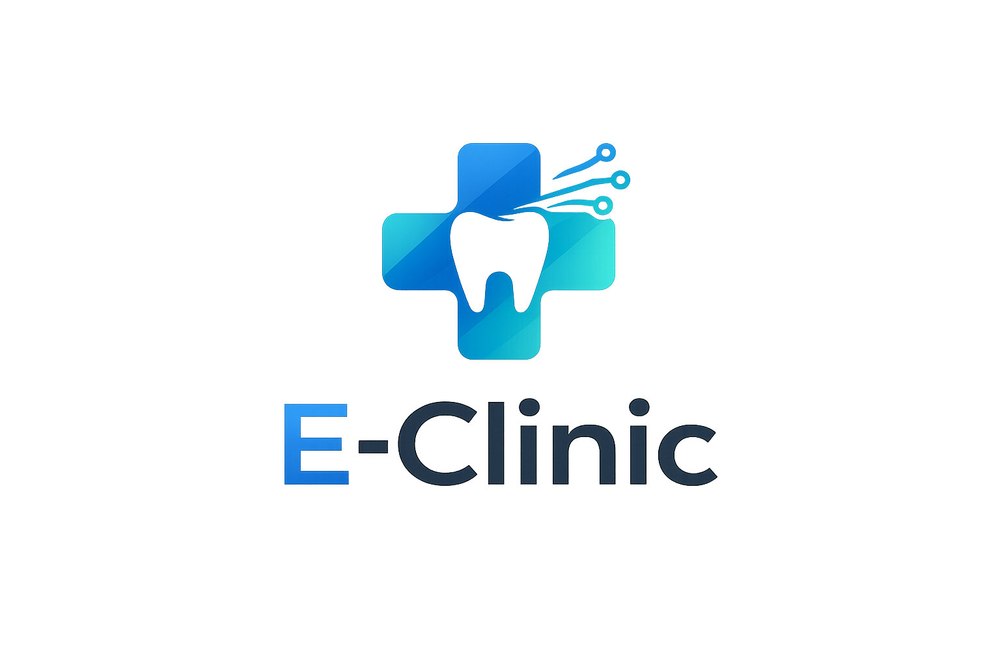

Computação e software
Fundamentos de Sistemas de Informação, Algoritmos, Sistemas Operacionais, Arquitetura de Computadores, Arquitetura de Software e Engenharia de Software Aplicada.
Estudante de Ciência de Dados com experiência prática construindo sistemas reais.
Foco em dados, automação e eficiência.

Sou estudante de Ciência de Dados e desenvolvedor full-stack com foco em dados, automação e construção de sistemas escaláveis.
Possuo experiência prática no desenvolvimento de aplicações completas, incluindo integrações com APIs e modelagem de dados. Destaco o E-Clinic, um SaaS voltado à gestão de clínicas odontológicas.
Tenho background em vendas, o que me dá visão prática de problemas e foco em soluções eficientes.
Universidade Santa Cecília
Brasil
Full-Stack & Dados
Matriz curricular EAD Unisanta com base em programação, estatística, engenharia de software, bancos de dados, cloud, big data e inteligência artificial.
Fundamentos de Sistemas de Informação, Algoritmos, Sistemas Operacionais, Arquitetura de Computadores, Arquitetura de Software e Engenharia de Software Aplicada.
Probabilidade e Estatística, Introdução à Ciência de Dados, Modelagem e Análise de Dados, Visualização dos Dados e Linguagem de Programação aplicada a dados.
Banco de Dados Relacionais e Não Relacionais, Infraestrutura e Operações de Dados, Arquitetura para Big Data, Serviços de Cloud, Aprendizagem de Máquina e Tópicos de IA.
Projetos Integradores ao longo da formação, com apoio de Gestão Empresarial, Empreendedorismo e Inovação, Ética e Cidadania, e Meio Ambiente e Sociedade.
Explore minhas principais frentes em software, web, automação, dados e design visual.

SaaS para clínicas odontológicas com agendamento, prontuário, financeiro, permissões e integrações em uma experiência completa.
Ver projeto →

Sistema interno para gestão de clientes, orçamentos, agenda, logística, estoque, financeiro e produção com experiência mobile-first.
Ver projeto →Projeto web informativo criado para transformar conteúdo textual e estatístico em informação digital clara e acessível.
Ver projeto →Fluxo automatizado para gerar e enviar orçamentos com mais rapidez, padronização e eficiência comercial.
Ver projeto →Dashboard analítico sobre concentração, setores dominantes e tipos de benefício em empresas sediadas em Santos.
Ver projeto →Aplicação de gerenciamento de tarefas com interface intuitiva para organizar, priorizar e acompanhar atividades do dia a dia.
Em breve →Tenho experiência prática construindo sistemas reais com foco em dados, automação e desenvolvimento full-stack. Vamos conversar sobre o seu próximo projeto!